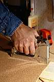

Вибрационните вредности на работното място се представят обикновено в две форми: вибрации на цялото тяло (тялото се разтърсва от машина или превозно средство) или вибрации на определена част от тялото, например използване на пневматичен чук.
 В тези случаи риска от увреждане зависи от честотата на вибрациите, интензивността и продължителността на действие. Вибрация с много ниска честота (по-малка от 1 вибрация за секунда) може да предизвика затруднено движение. Вибрации с ниска честота (между 1 и 80 вибрации за секунда) могат да предизвикат слабост, умора, нарушен сън, херния, увреждане на вътрешни органи и др.Съществуват три начина за намаляване на излагането на вибрации:
Предотвратяването на вибрациите се постига чрез:
| ДНЕВНА ДОЗА | НЕОБХОДИМИ ДЕЙСТВИЯ |
|---|---|
| 0,25 м/сек2 | Рисковете да бъдат намалени до поносимо ниво. Да се информират работниците за риска. |
| 0,5 м/сек2 | Работодателите да съставят програма за контрол. Информация и подготовка на работниците. Оценка на вибрациите и измервания. Да се прегледат работниците. Работниците да получат резултатите от измерванията. |
| 0,7 м/сек2 | Системни здравни прегледи. Ако вибрациите не могат да се намалят, то да се контролира времето на излагане. |
| 1,25 м/сек2 | Да се обявят дейностите пред съответните отговорни инстанции. |